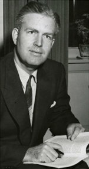

-1-MasterItem.svg)
Stories of Westminster United Church & its People / Page
203
As expected, they assured the congregation that they had found a man of
excellent character, whose
sermons would be welcomed by the the congregation, and whose quality of service
would equal that
of his predecessors. But most tellingly the Committee predicted that the new
minister, Nelson
Mercer, would reverse the decline in our numbers and that the pews would once
again be full.
The writer of this article was standing in the hall outside the Choir room.
After the Committee
had made their prediction I watched Huband turn in disgust, mutter “The hell he will!” and march
back to his office. Of course he was right. Our decline in numbers was not a
function of Minister,
but rather a function of a society in the throws of change unheard of prior to
WWII.
Rev. Nelson Richardson Mercer's Story
Nelson Mercer was a man of the Canadian Prairie. He was born on November
15, 1914 in Broadview, Saskatchewan. He was the son of Rev. A.J. Mercer,
a minister of the Methodist Church, and his wife, Violet. He was one of five
children, with three sisters, Lily, Ivy, and Violet, and one brother, Wendell.
As a young man Nelson attended University of Saskatchewan in the
1930s. After graduation he moved across campus to St. Andrew’s College,
a United Church training facility for Ministry. He was then ordained by the
Saskatchewan Conference in 1938. His first charges were in the Mission Fields
of Hudson Bay Junction and Nipawin, both located in the area Northeast of
Saskatoon near the border with Manitoba.
Then, in 1943, he was called to his first pastoral charge, to Knox United
Church in Brandon, Manitoba from ‘43 to ‘49. After that, he took a long trek
to Lethbridge, Alberta where he ministered in Southminster United Church from ‘49 to ‘55. From
there he returned to Manitoba to Westminster United Church, Winnipeg in ‘55 to ‘62. Finally,
he was called to Central United Church in Calgary (‘62 to ‘79) and remained an Albertan
for the remainder of his life.
Table
of Contents
